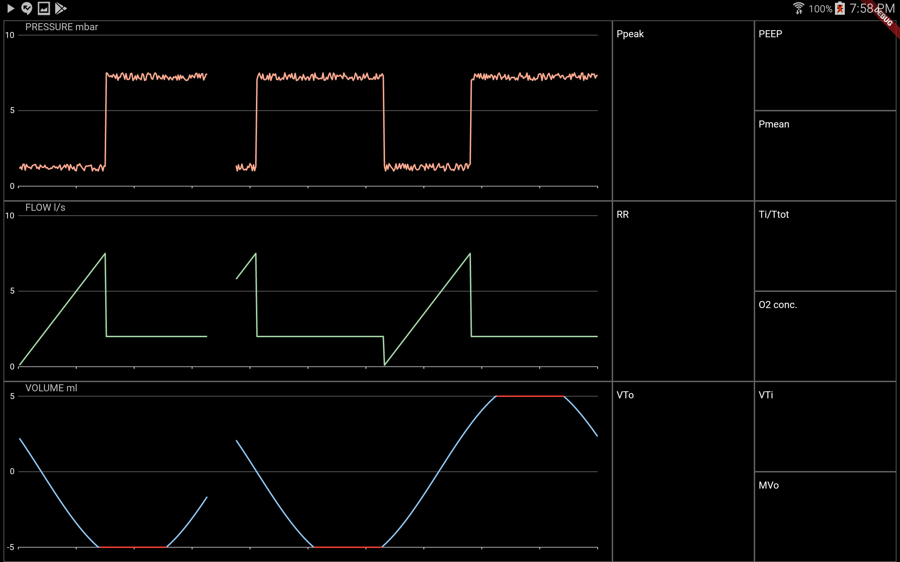

This web site is the future home of the Breezy Display app. This app will allow hobbyists to connect to an embedded controller, like an Arduino device, and display a data feed graphically. It is not currently released publicly.
